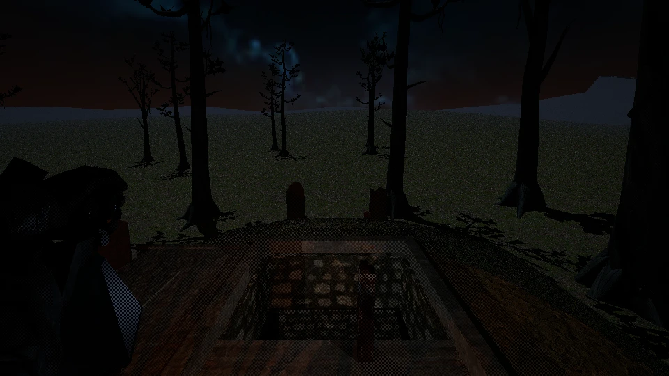
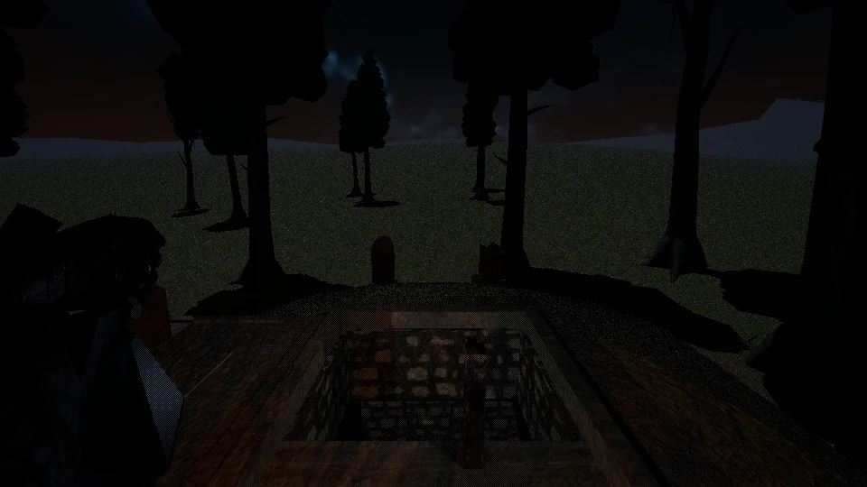
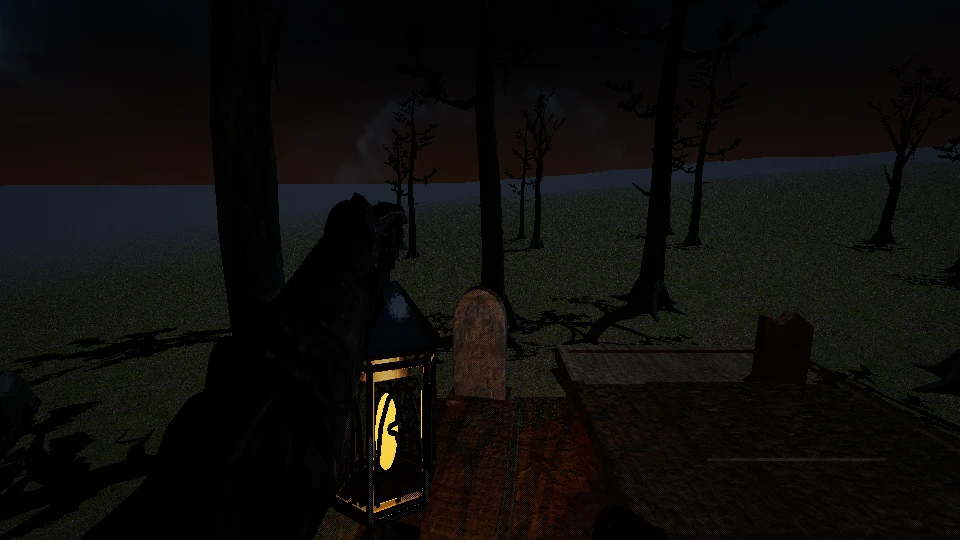
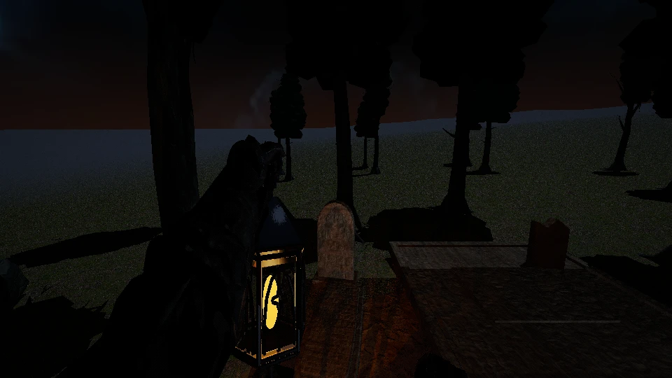
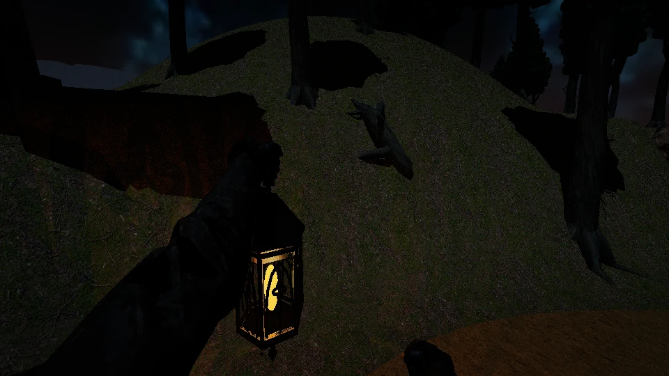
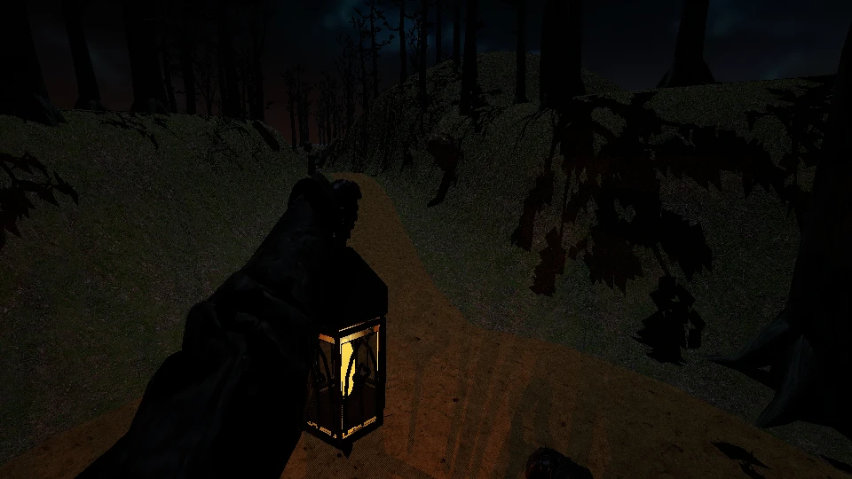
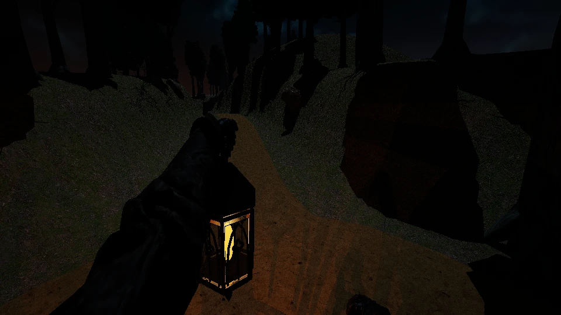

Clustered crowns — unadmitted
More canopy volume, but coarse near lobes and bare eye-level land. Production unchanged. Evidence and limitations
F01 north — frozen76, final tangent

Original crown control
Unadmitted clustered candidateF01 west — frozen76, initial tangent

Original crown control
Unadmitted clustered candidateMoving route64: outbound
 Original crown control
Original crown control
Unadmitted clustered candidateMoving route64: lookout sweep

Original crown control
Unadmitted clustered candidateStudio source inspection — not game images
Front: pine control/candidate, alder control/candidate; back reverses order.